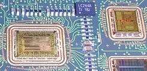

|
Chip-on-Board
(COB)
Chip-on-Board,
or
COB,
refers to the
semiconductor assembly technology wherein the microchip or die is
directly
mounted on and electrically interconnected to its final circuit
board, instead of undergoing traditional assembly or
packaging as an individual IC. The elimination of conventional device
packaging from COB assemblies simplifies the over-all process of
designing and manufacturing the final product, as well as improves its
performance as a result of the shorter interconnection paths.
The general
term for COB technology is actually
'direct chip attachment',
or
DCA.
Aside from circuit boards used for COB's, various
substrates
are available for use in DCA. There are, for instance, ceramic and
glass ceramic substrates which exhibit excellent dielectric and thermal
properties. Organic substrates that weigh and cost less while
providing a low dielectric constant also exist. There are also
flex substrates which, being pliable, have the ability to bend.
DCA assemblies have received a number of other names aside from 'COB'
based on these available substrates, e.g., chip-on-glass (COG),
chip-on-flex (COF), etc.
The
COB process
consists of just three major
steps:
1) die attach or die mount; 2) wirebonding; and 3) encapsulation of the
die and wires. A variant of COB assembly, the
flip-chip on
board (FCOB), does not require wirebonding since it employs a chip whose
bond pads are bumped, which are the ones that connect directly to
designated pads on the board. As such, FCOB's have their chips
facing downward on the board (hence the name 'flipchip'). Aside
from encapsulation, it is also necessary to
'underfill'
a flip chip
to protect its active surface and bumps from thermo-mechanical and
chemical damage.
|
 |
|
Figure 1.
Example of a
Chip-on-Board (COB) Assembly; note that the chips are
directly wirebonded to the PCB |
Die attach
basically consists of applying a die attach adhesive to the board or
substrate and mounting the chip or die over this die attach material.
Adhesive
application
may be in the
form of dispensing, stencil printing, or pin transfer.
Die placement
must be accurate enough to ensure proper orientation and good planarity
of the die. This is followed by a
curing
process (such
as exposure to heat or ultraviolet light) that allows the adhesive
to attain its final mechanical, thermal, and electrical properties.
After curing, organic contaminants must be removed either by
plasma
or
solvent
cleaning
so as not to
affect the wirebonding process.
The
wirebonding
process is
similar to that used in traditional semiconductor assembly, i.e., thermosonic
Au or Cu
ball bonding
or ultrasonic
Al
wedge bonding
may be employed to connect wires between the die and the board or
substrate. Chip-to-chip wirebonding may also be done for COB assembly.
Needless to say, the bond pads of the die and the board or substrate
must be free of any contaminants and defects to ensure the formation of
good and reliable bonds.
Finally, the die and bond
wires are
encapsulated
to protect them from mechanical and chemical
damage. Encapsulation is generally done by dispensing a liquid
encapsulant material (usually epoxy-based) over the die and wires or by
transfer molding. Encapsulants
also need to undergo curing, the process of which depends on the type of
encapsulant used.
Advantages
offered by COB technology include: 1) reduced space requirements; 2)
reduced cost; 3) better performance due to decreased
interconnection lengths and resistances; 4) higher reliability due to
better heat distribution and a lower number of solder joints; 5) shorter
time-to-market; and 6) better protection against reverse-engineering.
See Also:
Die Attach;
Wirebonding;
Molding; TAB Assembly;
Flip Chip;
IC
Manufacturing;
Assembly Equipment
HOME
Copyright
©
2005
www.EESemi.com.
All Rights Reserved.
|